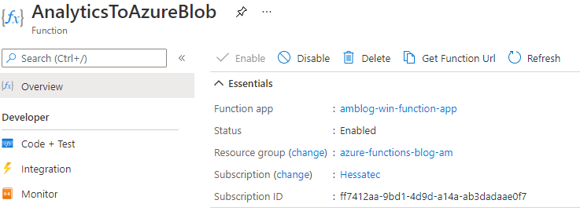
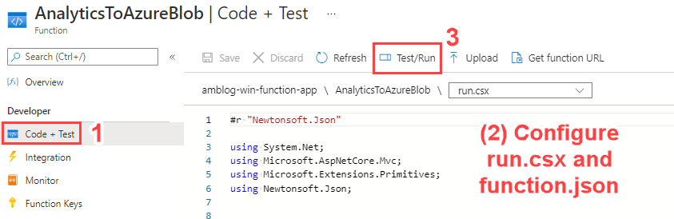
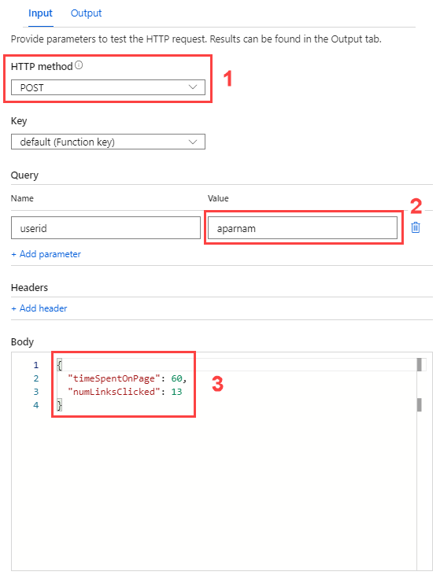
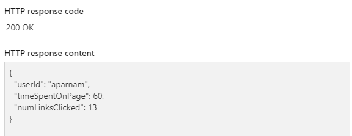
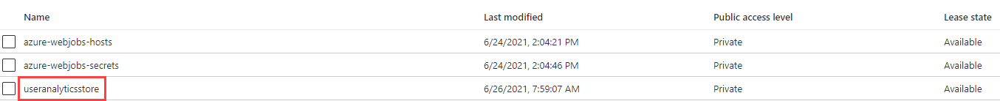
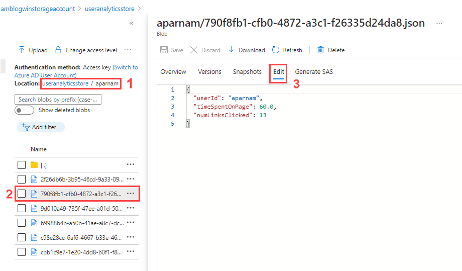

In this blog post, the Hessatec team will explain the key features of Azure Functions through concrete examples.
Azure Functions allow developers to deploy small pieces of code, known as “functions”, to the cloud. Like other Azure PaaS offerings, developers do not need to manage the underlying compute resources; they just publish their code, and it will be executed when a trigger is fired. Moreover, with the Consumption (Serverless) model, development teams are charged per-execution, an attractive proposition for modern applications.
As you design your application, consider the following benefits of Azure Functions:
We provide an ARM template that mimics our deployment. Deploy the Azure Function App, and then consult the run.csx file and the function.json file in the src/ directory of the repository. function.json contains the trigger and binding details. run.csx contains the Function App Code, written in C# Script.
A trigger causes a function to run, and Azure provides many triggers suited to a variety of business needs. Functions must have exactly one trigger.
Examples of Triggers:
In addition, Azure Functions support bindings. Bindings are declarative; that means that developers do not imperatively define how to connect to resources, but delegate that work to the Azure Functions runtime. In our example, by writing to an output string parameter titled outputBlob, the Azure Functions runtime creates a new blob in the specified container and writes the passed data to the new blob.
Once you deploy the ARM template, navigate to the deployed Function App. Create a new function titled AnalyticsToAzureBlob with an HTTP Trigger. The goal of this very simple Function App is to write simulated website interaction analytics to a blob storage container, where the data can be aggregated, analyzed, and served using Microsoft technologies.

Select Code + Test. Copy the function.json and run.csx files from our repository. Then, select Test/Run.

In the Input tab, select POST as the HTTP method (1). Feel free to use either a function key or a host key. For userid, enter a sample username (2). For the request Body, populate the timeSpentOnPage and numLinksClicked keys; the request body is deserialized into the AnalyticsJsonRequest POCO (3). Select Run.

Wait for an HTTP response code of 200. Notice how the JSON response contains a userid key; that is the serialized AnalyticsJsonResponse object.

Navigate to the Storage Account deployed in the ARM template. Notice that there is a container called useranalyticsstore; it is specified in the output binding.

Navigate to the appropriate directory in the container (1). Select the JSON file (blob) written by the Azure Function (2). Select the Edit tab to view the contents of the JSON document.

Congratulations. You have completed your first Azure Function App.
The Azure Function demonstrated in this post is quite simple. Now that you understand bindings and triggers, try the following:
In this post, we briefly introduced Azure Function Apps and discussed their business use cases. While Azure Function Apps serve stateless workloads well, use Azure Durable Functions for stateful workloads. Durable Functions support multiple patterns for complex serverless applications.
Azure also offers Logic Apps for customers. Logic Apps offer a powerful enterprise integration tool, connecting to solutions such as Office 365, SQL Server, and SAP. Like Function Apps, Logic Apps support serverless execution and many development environments. The Hessatec team plans to release more content about Logic Apps soon.
Consult the resources below to learn more about Azure Functions and serverless applications in Azure.
If you encounter any technical issues while following this blog post, please open an issue in our Demos repository.